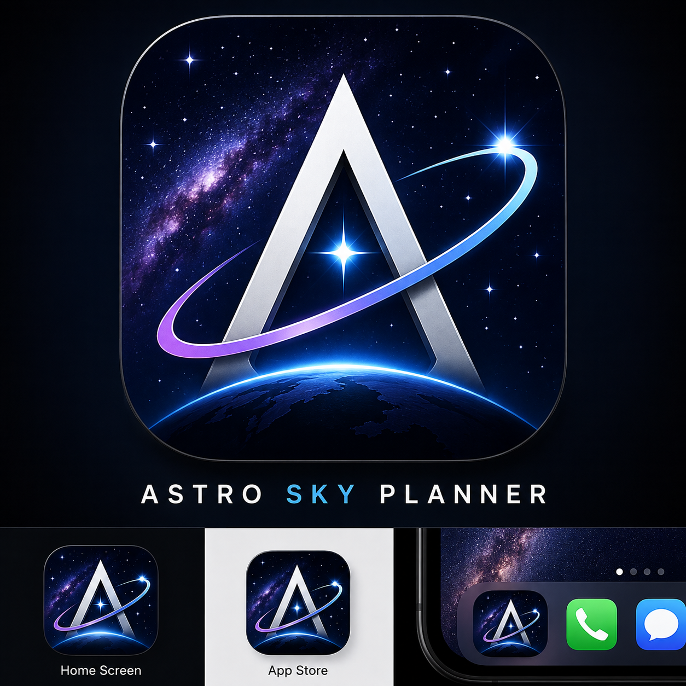

OPEN CIRCUIT • SOFTWARE & APPS
Astro Sky Planner
Astro Sky Planner is a free Android astrophotography companion that helps find the best sky objects for your location and conditions, with forecasts and Bortle Class information.

About Astro Sky Planner
Astro Sky Planner is an astrophotography companion Android app that helps you decide what is worth photographing from your location and on a given night. It brings together local sky conditions, a forecast, recommended targets, and Bortle Class information in one planning tool.
For astrophotographers, the idea is simple: spend less time figuring out what is visible and more time capturing it. The app is designed to help you choose promising targets based on where you are and the conditions you have.
FEATURES
What it does
Target planning
Find promising sky objects for your location and night.
Local forecast
Use the forecast and conditions when planning an observing session.
Bortle Class
See the light-pollution class associated with the location.
Astrophotography focused
Built as a practical companion for people planning imaging sessions.
Frequently asked questions
What is Astro Sky Planner?
It is an Android astrophotography planning app that combines location, sky conditions, forecasts, targets and Bortle Class information.
Does it tell me what to photograph?
The app is designed to help identify good sky targets for the selected location and conditions.